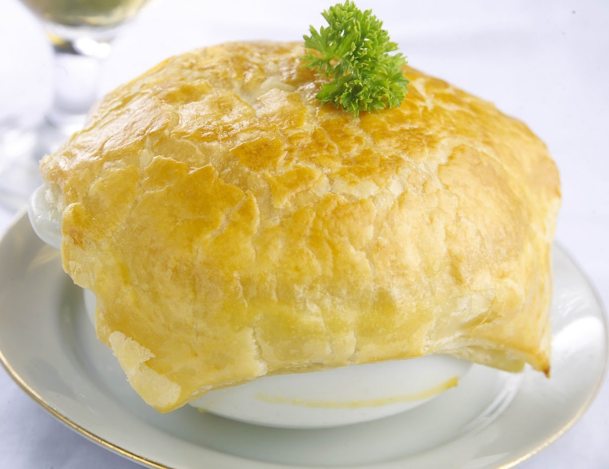

Resep hari ini
Zuppa Soup

Bahan-bahan
Puff pastry siap beli, tipiskan, potong kotak sesuai ukuran mangkok
Sup Ayam Jamur
100 gr jamur kancing kaleng, cincang
150 gr dada ayam rebus, potong dadu
50 gr bawang bombay, cincang
100 gr jamur kancing kaleng, cincang
1.5 lt kaldu ayam
250 ml susu evaporated
50 gr tepung terigu
100 gr mentega
1/2 sdt merica bubuk
2 sdt garam
1 sdt chicken powder
1 sdt chicken powder
Cara Membuat
Panaskan mentega, tumis bawang bombang sampai layu
masukkan terigu, aduk rata, biarkan terigu matang.
Tuangi susu dan kaldu, aduk rata hingga mendidih
pindahkan ke panci,masukkan ayam, jamur, dan bumbu lain, aduk rata
Tes cicip, jika sudah pas, matikan api.
Penyelesaian
Tuang sup ke mangkuk keramik tahan panas, tutup bagian atasnya dengan adonan pastry.
Oven hingga pastry matang coklat kekuningan
Angkat, sajikan panas.
Tips :
Jangan ganti susu evaporated dengan susu cair biasa, karena rasanya akan sangat beda.
Chicken powder adalah kaldu ayam bubuk / kaldu instan, kalau tidak suka bisa dihilangkan.
Waktu mengoven, rak paling atas dikeluarkan agar pastry tidak mengenainya, karena pastry biasanya akan sangat mengembang.
Hasil jadi sekitar 15 mangkuk